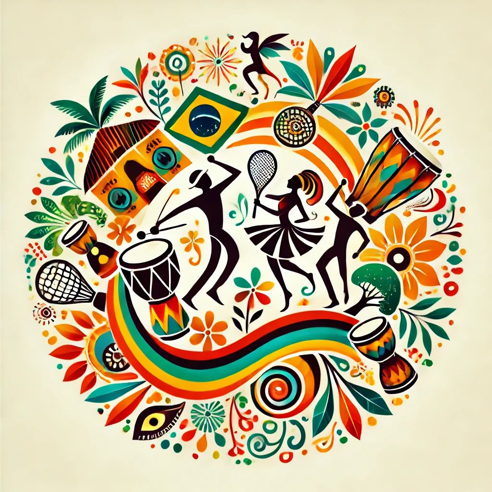
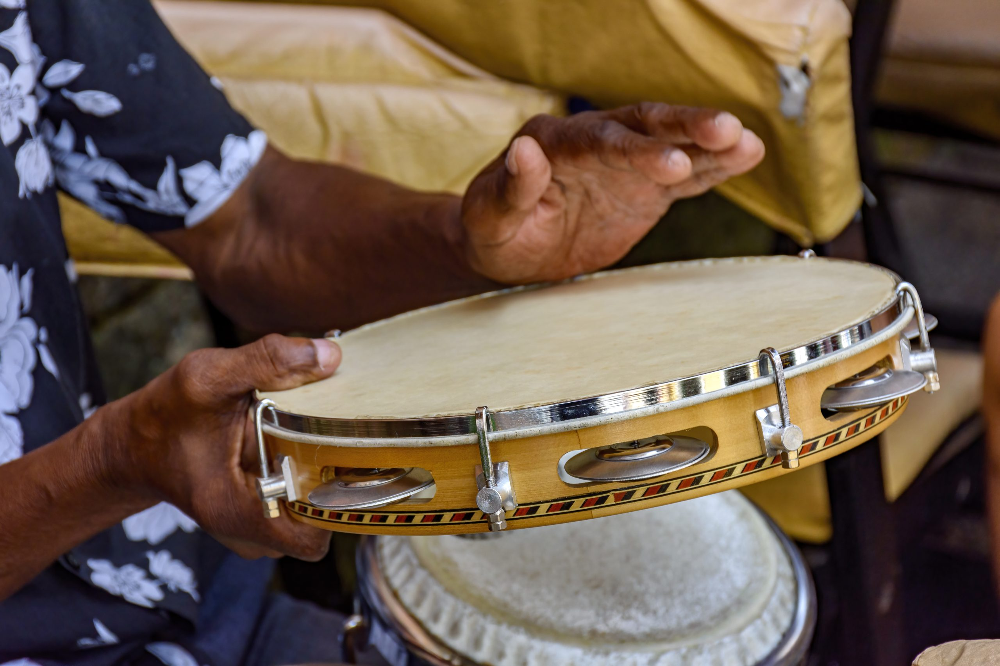

O Samba de Roda
O samba de roda surgiu na Bahia, no século XVII, embora seus primeiros registros datem de 1860. Hoje, ele é patrimônio e herança cultural afro-brasileira.
Esse tipo de samba brasileiro surgiu de um estilo musical africano, o semba, trazido para o Brasil com a chegada de escravizados angolanos.
Está intimamente relacionado à roda de capoeira, que envolve música e luta, e aos orixás, entidades espirituais africanas.
Atualmente, essa manifestação artística está presente em todas as partes do Brasil. Na Bahia, é no Recôncavo baiano que esse ritmo é mais popular. Isso porque essa região foi palco da chegada de escravizados africanos.
Apesar de ser baseado nas tradições africanas, ele também envolve alguns aspectos da cultura portuguesa. Como exemplo, temos o uso de alguns instrumentos como a viola, e ainda, as letras das músicas, cantadas em português.